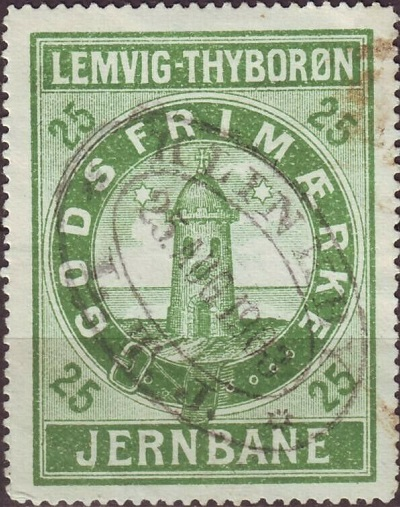
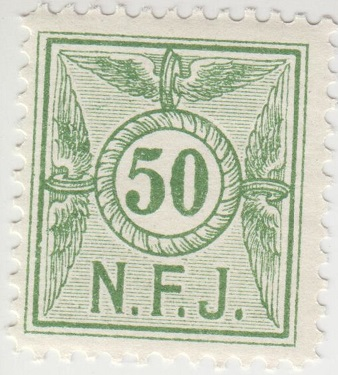

1911 Three fishes in a circle.
Return To Catalogue - Denmark - Denmark Railway Stamps, overview
Note: on my website many of the
pictures can not be seen! They are of course present in the
catalogue;
contact me if you want to purchase it.
1911 Three fishes in a circle.
In this 1911 design I have seen: 15 o green 35 o blue 50 o blue 50 o red (1959) 60 o yellow 75 o green 80 o brown 90 o brown The following values should also exist 25 o red 40 o violet 45 o red Surcharged (provisional overprints, 1951-1962) "60" on 50 o red "75" on 50 o red "100" on 40 o grey "100" on 60 o yellow "125" on 60 o yellow "100" on "75" on 50 o red (More overprints exist)
If my information is correct, only two stamps were issued. One in 1899, 20 o green and in another type 25 o green in 1903.

1903 25 o green
Issued stamps from 1875 onwards.

1875: 16 o lilac and 20 o lilac (both 10 Pund). The 20 o was
issued in 1881. In 1893 a 25 o lilac was issued. A "8
SKILLING" lilac (1875) also exists.
Some rare manual overprints 20 o on 16 o exist (1881). A very similar design exist for 'De Lollandske Jernbane"

1875 issue: Inscription "LOLL. F. JRNB" 5 o blue, 50 o
green, 1 Krone lilac and 4 Kronen light brown (in an ellipse).
Also exist: 5 o brown, 50 o grey, 1 Krone blue and 4 Kroner lilac
.


"L.F.J.S." (Lolland Falsterske Jernbane Selskab
1916(?) In the above design I have seen the following values: 5 o blue 10 o red 30 o green 40 o brown 60 o violet 80 o grey 100 o orange 120 o dark green A 50 o yellow should also exist Overprinted: "7" (violet) on 5 o blue (1920) "50" on 30 o green "90" on 80 o grey (1949) "170" (red) on 150 o dark green "350 ore" on 5 o blue


1920 In the above design I have seen: 20 o (10 Pund) lilac 25 o (5 Kilogram) lilac "25" on 20 ore (10 Pund) lilac "45" (4 different types should exist) on 25 o (5 Kilogram) lilac With "Godsfrimaerke" written at the bottom 25 o blue 40 o lilac 45 o lilac 60 o orange 75 o green 90 o green "25" on 20 o lilac "40" on 45 o lilac "75" on 90 o green
A 16 ore (10 Pund) and 20 ore (10 Pund) in this design exists for the 'Lolland Falster Jernbane'.

The Nakskov - Kragenaes Jernbane issued similar stamps.
1917 In the above design I have seen: 10 o blue "25" (two types should exist) on 10 o blue "20" on 10 o blue "30" (9 different types should exist) on 10 o blue


"L.J." with 1962 cancel and "L.J. BIL" for
buses.
I have seen with winged wheel on top the following values: 10 o red 50 o green 100 o orange 170 o grey 300 o green 400 o grey 500 o lilac "10" and bar on 400 o grey "100" on 400 o grey With the "BIL" inscription I have seen: 100 o blue 200 o yellow 250 o lilac "225" and three black lines on 200 o yellow "275" and three black lines on 250 o lilac
1935 issue
1935 In this and similar designs with "DE LOLLANDSKE JERNBANER" I have seen: 25 o Bus (upright design) 35 o Inscription Rodbyhavn, beach scene 40 o modern train near a lake 50 o Inscription Nanskov Havn 60 o Inscription Nanskov Banegaard 60 o Inscription Rodbyhavn 70 o Inscription Maribo Domkirke (1951) 75 o Inscription Maribo Domkirke 90 o steam train 100 o Incription Nakskov Banegaard (1951) "50" o 60 o "70" (5 types) on 40 o (1951) "80" on 70 o "100" (7 types) on 90 o (1951)
With "LOLLANDSBANEN" 50 o (Naksvov Havn) 60 o (Rodbyhavn) 70 o 90 o (Rodbyhavn) 100 o steam train (design as in the above 90 o stamp) 100 o (modern train near a lake) 125 o (Nakskov Banegaard) 175 o (modern train near a lake) 90 o (beach scene Rodbyhavn) "110" on 80 o (Rodbyhavn) "110" on 90 o (Rodbyhavn) "200" on 50 o (Nakskov Havn) "225" on 125 o (Nakskov Banegaard) "250" on 80 o (Rodbyhavn) "300" on 150 o (Rodbyhavn) 75 o with "BIL" overprint (Maribo Domkirke)

Lollands Banen with modern train
In the above modern train design I have seen: 175
o red and black, 220 o yellow and black, 440 o green and black,
550 o brown and black, 800 o olive and black, 900 o lilac and
black, 1100 o blue and black,
and the following overprints: "230 ØRE" on 220 o,
"340 ØRE" on 220 o 330 blue and black, "400"
on 550 o, "500" (red) on 550 o, "600" on 440
o (see image above), "1000" on 800 o, "1200"
on 900 o, "1400" on 1100 o. "700 øre" on
"230 ØRE" on 220 o.

A similar stamp was issued for Lynby Vedbaeck

Issued from 1936 to 1953, image of a deer looking over a scene
with a train
I have seen the following values: 40 o black and green 40 o black on blue 60 o black and yellow 60 o black on blue 60 o black 70 o black on blue 80 o black 90 o black on lilac 90 o black on yellow 100 o black on yellow 150 o black on lilac
I've also seen a pictorial design (perforated) with a station(?) with a bus: 100 o.

Also labels with a winged wheel (top and bottom perforated) with "BANEMAERKE": 200 o brown, 225 o blue, 300 o red, 400 o green, "600" on 200 o brown, "700" on 225 o blue, "800" on 200 o brown, "800" on 400 o green, "900" on 300 o red (see image above).
Also some primitive imperforate labels with local train scenes: 50 o blue and black (Brede), 21,00 kr red and black (Jagersborg), 21,00 kr red and black (Kgs Lynby), 21,00 kr red and black (Brede), 21,00 kr red and black (Ravnholm).
 '
'

"LYNBY VEDBAEK JAERNBANE"; 20 o green and 25 o green.
I've also seen 40 o blue, "45" (violet) on 25 o green,
"90" (violet) on 25 o green. A similar stamp was issued
for Lyngby - Naerum.


1927: 25 o red, 40 o brown, 40 o blue, 60 o blue, 60 o brown, 60
o green (see image above), 75 o green, 90 o grey';
"-5-" on 75 green, "50" on 40 o brown,
"60" on 75 o green, "70" on 40 o brown,
"100" on 90 o grey (see image above).
In 1950 a pictorial design was issued: 40 o, 70 o, 90 o, 120 o (view of Mariager) and 150 o. Overprints exists and also "Rutebilpakke" overprints (bus parcels).

"MFVJ" train design
A train design with only inscription "MFVJ" was issued in 1959 (see image above) in the values: 25 o, 90 o, 100 o, 125 o, 150 o, 175 o, 200 o, 225 o, 300 o (all in red). Similar stamps were issued for SVJ (Skive Vestsalling Jernbane).

"M.F.V.J. BILRUTERNE" (bus route). I've also seen 75 o
green.

1930's(?) Image of church; in this design I have seen: 25 o red,
40 o blue, 50 o lilac, 60 o orange, 75 o green, "50"
and small circles on 60 o orange, "90" and 'squares' on
75 o green.

Inscription 'Maribo - Torrig Jernbane"; 35 o black on violet

"40" on 45 o red, also a very similar stamp for the
"PRAEST - NAESTVED JERNBANE"
I have seen the following values:
With inscription "SCHÕNEMANN LITH NYBORG": 25 o blue,
35 o green; "25" on 15 o orange
Without inscription at the bottom: "60" on 45 o red,
"75" on 45 o red, "40" (at least two types)
on "75" on 45 o red.

Smaller size; 15 o yellow; I've also seen "50" on 75 o
red.

Modern train in front of Praesto station
In the above design I've seen 90 o orange, 225 o orange and several overprints: "10" on 150 o blue, "25" on 70 o red, "50" on 25 o blue, "80" on 225 o orange; "100" on 90 o green, "110" on 70 o red, "125" on ? o blue.
Also a design with a building and "NYSØ": 25 o blue, 40 o orange, 50 o green.
I've also seen a 35 o grey, 40 o blue, 60 o orange, 70 o orange,
75 o olive, 90 o grey in this design.

Overprint
In the above design I have seen with overprint
and small circles on the old value: "70" on 40 o blue,
"80" on 60 o orange and "100" on 90 o green
Also "75" and small triangles and rectangles on 90 o
green.
Also "125 125" on 90 o grey.
Supplementsmaerke 10 o red. Also "30" (at least two
types) on 10 o red.The 'De Lollanske Jernbaner' issued similar
stamps.

In this design exist: 25 o red, 35 o grey, 40 o
blue, 45 o blue, 50 o lilac (two types, "5" different),
60 o orange, 75 o green, 90 o green, 100 o green
And the following overprints:
"40" on 45 o blue, "80" on 60 o orange,
"100" on 90 o green.


With overprint "L.J."; I have also seen 25 o red with
this overprint.
"Supplementsmaerke" 10 o black on yellow.
On 4 March 1882, the Nordfynske Jernbane
requested two numeral circular cancellation stamps
"273" and "274" as well as a circular date
cancel with the inscription "NORDFYENSKE: JB: PK":
Source:
http://www.bolbro-frimaerkeklub.dk/wp-content/uploads/2018/07/Bolbro-posten-2-2012-B.pdf
The first railway stamps were issued in 1882.
20 o red (10 kg, 1882 issue), also exist 10 o violet (10 kg), and
25 o (10 kg). In 1904 with "Kg" inscription: 10 o
violet, 15 o violet and 25 o red. In 1919 a provisional overprint
and a few more stamps were issued 25 o violet (2 1/2 Kg) and 35 o
red (5 Kg). The 20 o violet was also issued without the word
"INDTIL" in 1919.

1911 issue, the following values exist: 5 o yellow, 10 o blue, 30
o red 40 o brown, 50 o green, 60 o violet, 80 o red and 100 o
yellow


1924 Smaller size, with inscription "N.F.J. FOR
PAKKER". The values 20 o red, 25 o violet (two types), 40 o
green and 60 o green also exist. Reissued in 1946 in the values
25 o red, 30 o brown, 40 o green, 50 o yellow (first 50 o above)
and 75 o blue. Again another issue in 1965: 50 o yellow (second
50 o stamp above), 75 o blue, 100 o redbrown, 125 o red.
1947 Pictorial issue: 90 o map, 60 o (train, inscription "Lyntog til Bogense 1 time"

1903: With the coat of arms of Aalborg in a circle.


1907 NordJyllands Forenede Privatbaner in a very similar design
as the Aalborg stamps.
Winged wheel on top, "N.F.P." on the center.
Large sized stamp; 60 o grey.
Smaller size: I've seen: 50 o blue, 50 o grey, 60 o grey, 75 o
orange, 90 o brown.
{kind=link}
{kind=link}